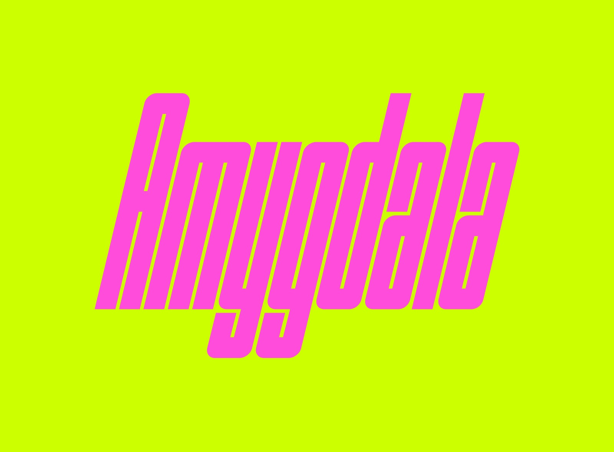
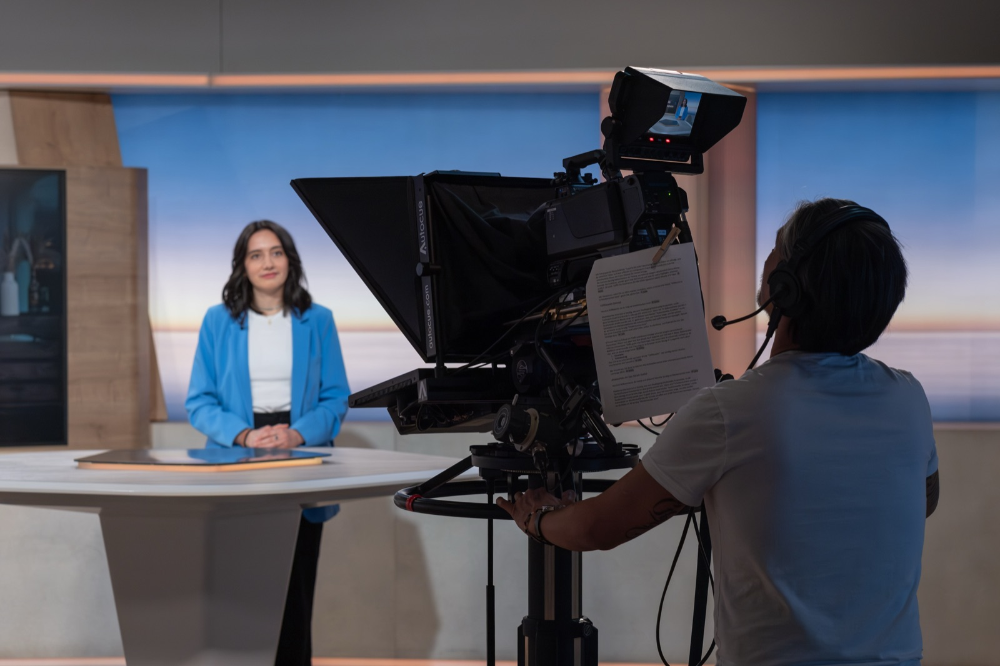
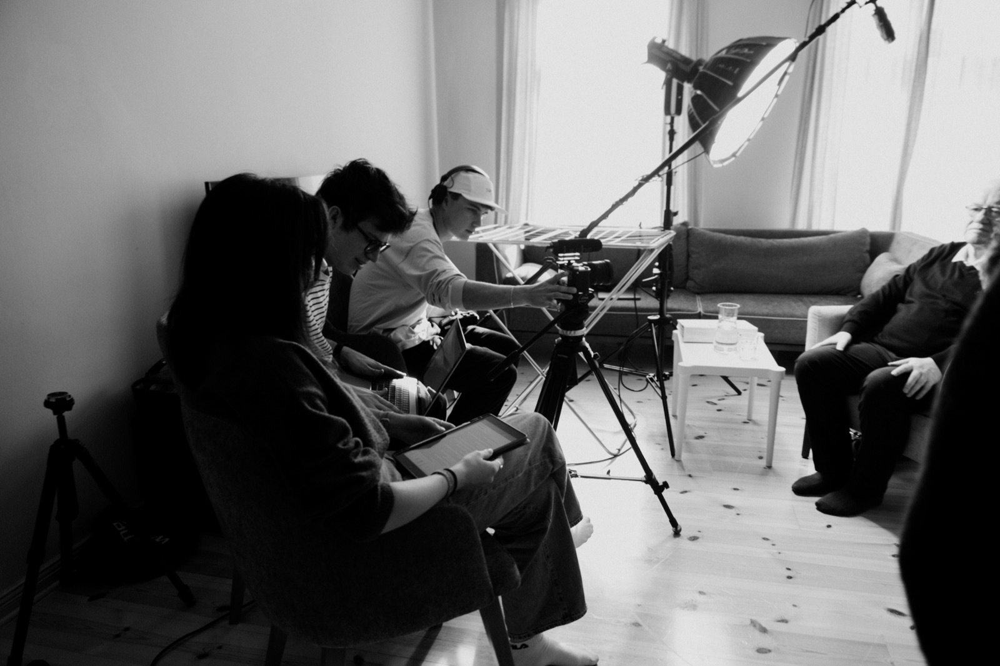
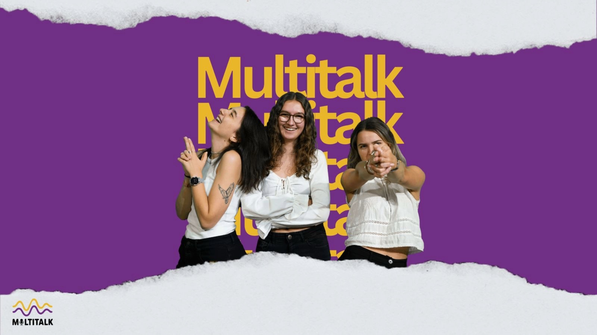
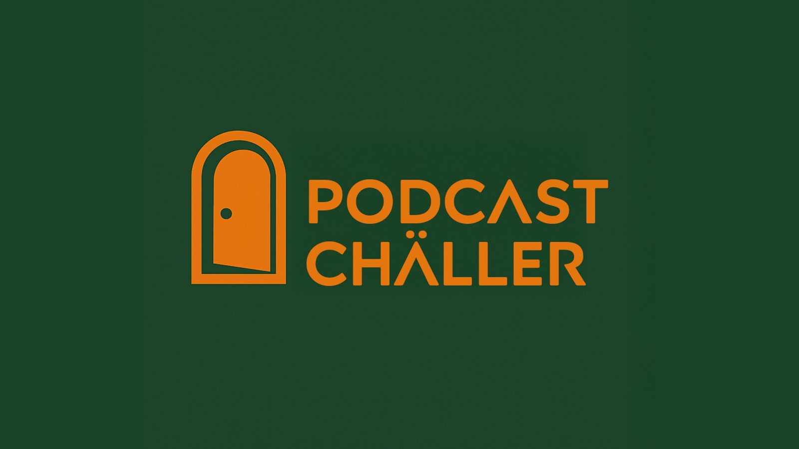
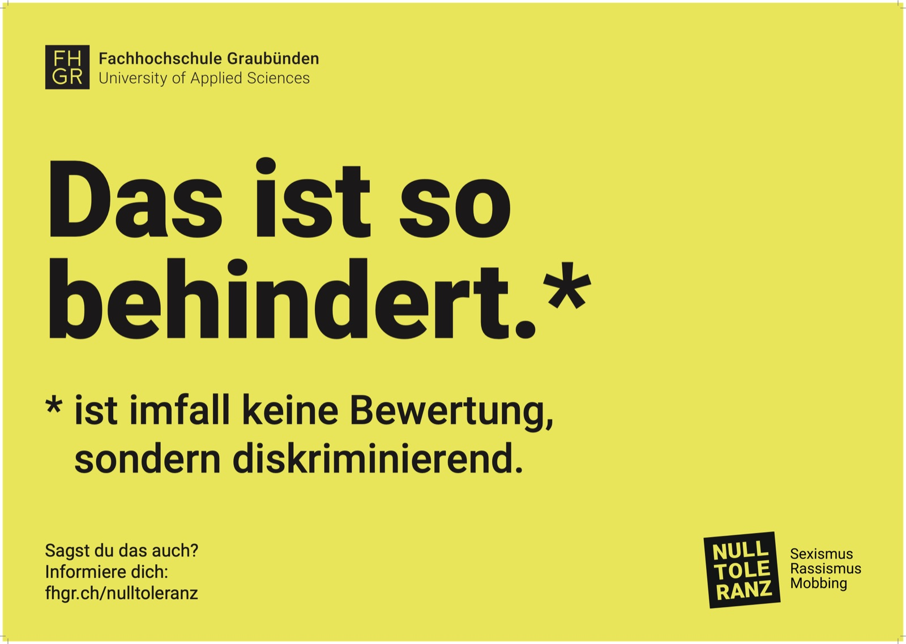

01 / Video & Reportage
Co-Projektleitung · Host

Major Journalismus Multimedial · FHGR
Multimedia Production & Journalism
Ich erzähle Geschichten
in Bild, Ton & Raum.
01 / Selected Work
Hover to
reveal color

Major Journalismus Multimedial · FHGR

Modul Digezz · TV Südostschweiz

Modul Audiovisuelles Erzählen · FHGR

Campusradio der FHGR

Modul Digezz · auf Spotify

Kampagne im Auftrag der FHGR
02 / About & Skills

Ich bin Multimedia Producerin und Journalistin mit einem Blick für starke Bilder und einem Ohr für gute Geschichten.
Von der ersten Recherche bis zum finalen Schnitt verbinde ich journalistische Präzision mit visueller Neugier. Ich arbeite gern nah an Menschen, Themen und den Details, die eine Geschichte unverwechselbar machen.